One question about last month, three closed answers
How-to · survey · step 3 of 4
Send it to people who acted
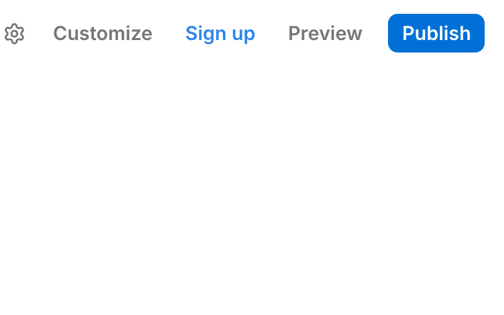
3
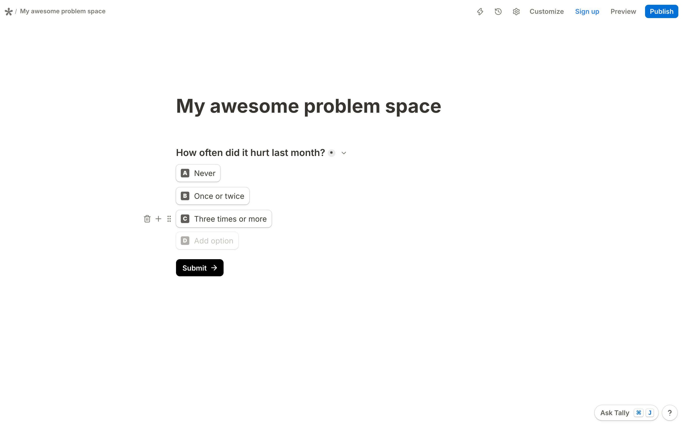
1Build the form
2Ask about the past
3Send it to people who acted
4Let AI count, then check
Only to people who already acted, your sign-ups
How-to · survey · step 4 of 4
Let AI count. Check every number
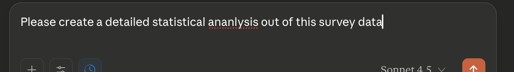
4
1Build the form
2Ask about the past
3Send it to people who acted
4Let AI count, then check
Export without names and emails.
Mantra
Real validation comes through the credit card
Now you · as a team · 3 minutes
Put your evidence on the pyramid
Output
Your top step, honestly
Input 1 of 4 · Rank it · the answers
Rank it: saying, doing, paying
1
Which evidence is strongest?
What people do and pay beats what they say. Numbers verify
2
When does a survey count?
Only when it asks about the past and never mentions your solution
3
What validates a problem?
Sign-ups and users are signal. Validation comes through the credit card
Input 2 of 4 · Chapter 4 of 9
Draw it: the line before the data
Write down what would change your mind before the first visitor arrives.
Input 2 of 4 · Draw it · three questions
What would change your mind?
1
Why write the line before the data?
2
What goes on a test card?
3
What if you miss the line?
Why it matters
Decide after the data, and everything says yes
96% · standard psychology papers
positive
44% · Registered Reports, hypotheses filed first
positive
0%50%100%
% of papers whose first hypothesis came out positive
57% 8%heart trials with a benefit, before and after 2000
87%of 67 top-journal trials needed a correction for their outcomes
Why it matters · founders
Founders taught to test pivot more
32% · trained to test hypotheses, 19 of 59
pivoted
19% · control group, 11 of 57
pivoted
0%25%50%
% of startups that pivoted
116Italian startups, randomized
759firms in 2024: more ideas stopped
Test card · before anyone visits
Write the test before the page exists
Example · a test card
Even an interview test gets a number
When you miss the line
Missed the line? Move inside the problem space
Now you · as a team · 3 minutes
Write your test card
Output
One card, dated today
Input 2 of 4 · Draw it · the answers
Draw it: the line comes first
1
Why write the line before the data?
Decide after the data, and everything says yes. Founders who test pivot more
2
What goes on a test card?
Segment, action, promise, visitors and sources, and the share that passes by a date
3
What if you miss the line?
Move inside the problem space: the next segment or problem
Input 3 of 4 · Chapter 5 of 9
Launch it: a page that tests your problem
A page in their words with one button is your first quantitative test.
Input 3 of 4 · Launch it · three questions
How does a page test a problem?
1
Why a page before a product?
2
What goes on the page?
3
How fast can you build it?
Story · Zappos, 1999
He sold the shoes before he owned them
1
No shop has the boots he wants
2
He photographs a shop's shoes
3
He puts the photos online
4
Someone orders. He buys the pair at full price
Launch right away. A page is the smallest launch there is.
Only a launch shows whether you meet a need.
Anatomy · problem-space page
Their problem, their words, one button
A real page · read it top down
Problem first. The product comes later
Headline
"Research is a gold mine. Here is the treasure map."
One action
Request a demo
Landing page content · tip 1 of 4
Lead with the outcome they want
From
AI-powered recruiting platform
To
Know within a day when a finalist goes silent
Landing page content · tip 2 of 4
One line says what, for whom, which change
From
It's a recruiting tool
To
A daily check for in-house recruiters that flags every finalist who stopped answering
Landing page content · tip 3 of 4
Benefits, not features
From
Features of your product
To
No finalist lost to silence. No chasing by hand.
Landing page content · tip 4 of 4
Ask for the action that proves demand
From
Learn more
To
Apply now · Book a call · Buy
Vote · hands
Which button proves the most demand?
1
Follow us
2
Join the waitlist
3
Book a 15-minute call
4
Pre-order
AI copywriting
Don't write from scratch. Start from their words
Act as a senior copywriter. Based on these interview notes [PASTE NOTES], write 5 variations of a Landing Page Hero Section (Headline + Subheadline + CTA) that addresses the core pain point directly.
A starting point, not the final copy.
Now you · alone · 3 minutes
Your headline, from one quote
Output
One hero section
Tooling to test a problem space
Any builder works. Ship today
How-to · build a page · step 1 of 4
Pick a template. Skip the design debate
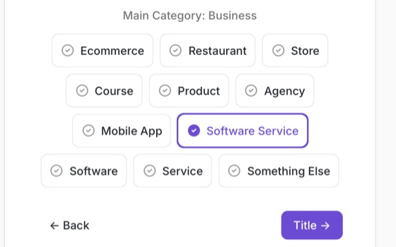
1
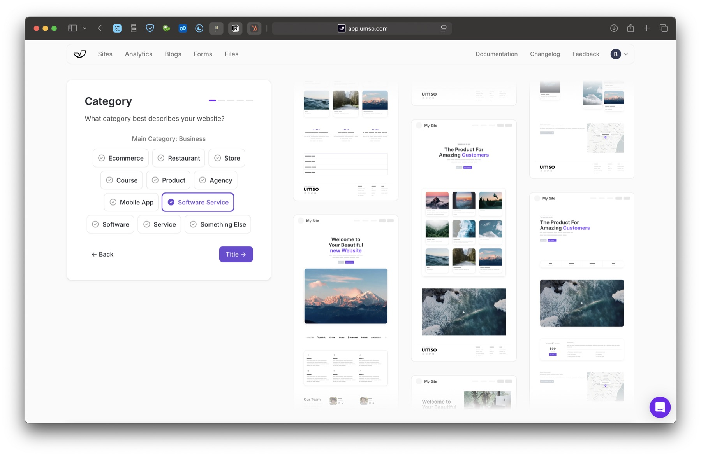
1Pick a template
2Describe the problem, let AI draft
3Rewrite in their words
4Publish on a free subdomain
Business, then your category.
How-to · build a page · step 2 of 4
Describe the problem. Let AI draft
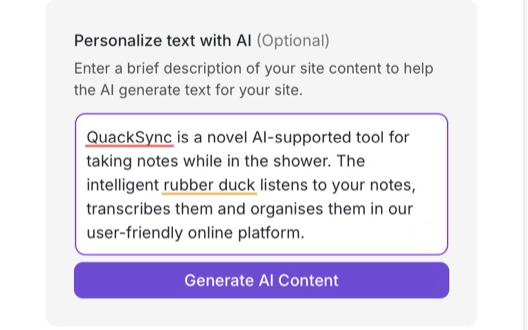
2
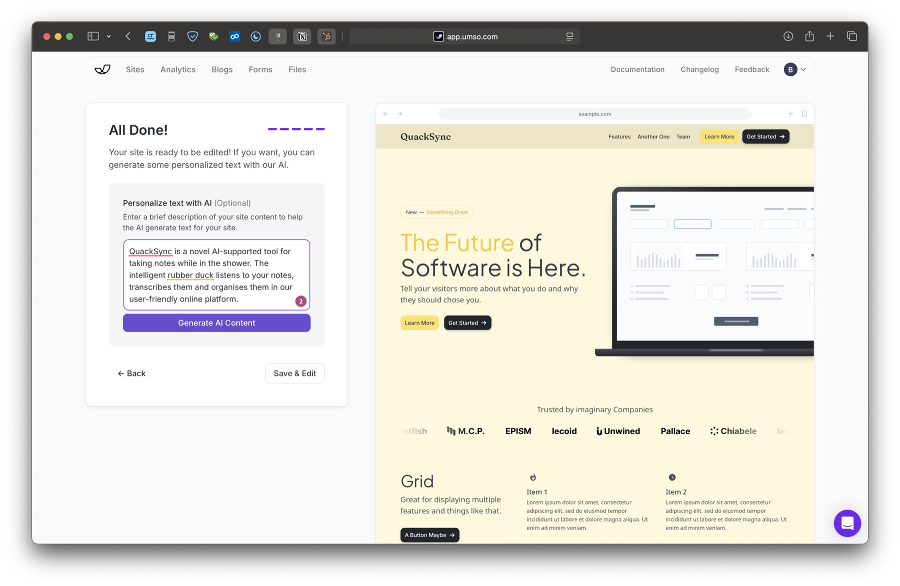
1Pick a template
2Describe the problem, let AI draft
3Rewrite in their words
4Publish on a free subdomain
AI drafts. You decide.
How-to · build a page · step 3 of 4
Rewrite the hero in their words
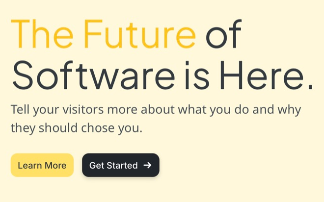
3
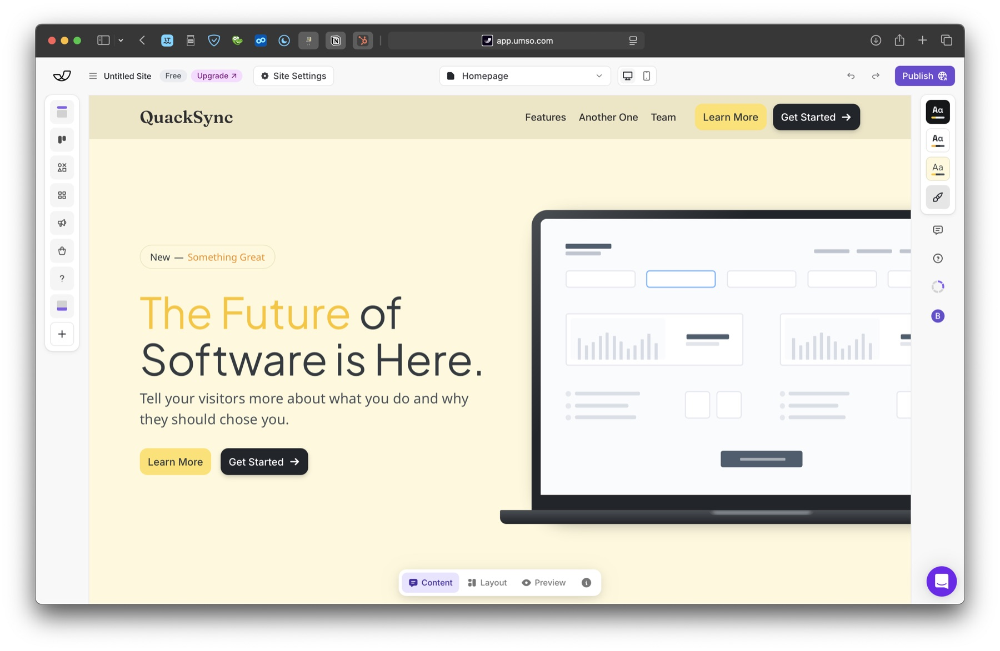
1Pick a template
2Describe the problem, let AI draft
3Rewrite in their words
4Publish on a free subdomain
Their sentence goes here.
How-to · build a page · step 4 of 4
Publish on a free subdomain
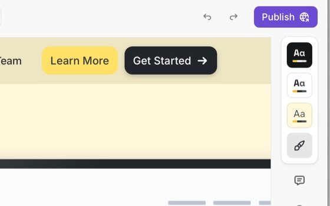
4
1Pick a template
2Describe the problem, let AI draft
3Rewrite in their words
4Publish on a free subdomain
Domains wait until the page earns one
Input 3 of 4 · Launch it · the answers
Launch it: their words, one button
1
Why a page before a product?
Sell before you own it, as Zappos did. Launch right away
2
What goes on the page?
Their problem in their words, the outcome they want, one button that proves demand
3
How fast can you build it?
Today. Any builder works. AI drafts, you rewrite the hero in their words
Input 4 of 4 · Chapter 6 of 9
Count it: visitors from your segment
Bring the people who have the problem, and count only them.
Input 4 of 4 · Count it · three questions
Who comes, and who counts?
1
How many visitors do you need?
2
Where do you find them?
3
How do you read the result?
Let's talk conversion
Work backwards from the sign-ups you need
Speed matters
To get, every day, each of you, at least
15visitors
300see your link× 5%click 15× 7days 105× 10%sign up 10
300 a day see your link!
Distribution
Go where your segment already is
Finding the room
Name the room, not the channel
Online communities · one named Luma event
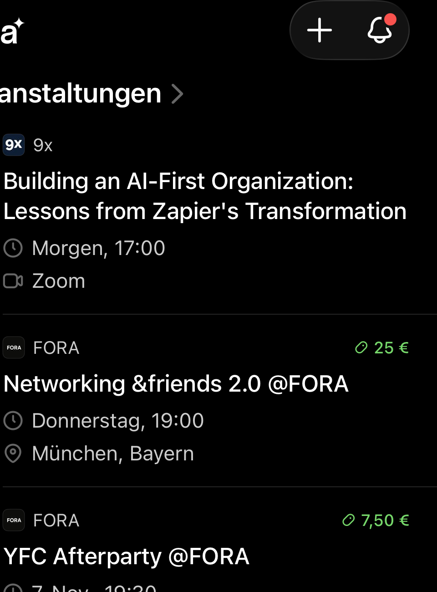
Offline places · a campus canteen
Building an audience
Post what you learn. Talk to who reacts
1
Post what you found, what surprised you
2
Message everyone who reacts
3
Check: are they your segment?
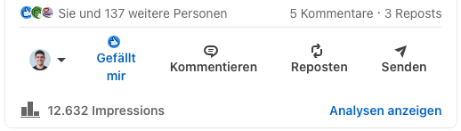
How-to · let AI do the heavy lifting
Let an agent search for you, every Monday
1Ask where your segment talks
2Schedule it weekly
3Open every source
Leads end in a named person.
Benchmark · warm and cold
Warm traffic converts. Cold traffic costs
16.9% · email, people on your own list
warm
4.1% · paid search
2.9% · paid social
3.8% · all SaaS landing pages
0%10%20%
% of visitors who convert, by source
Cold traffic · Bastian's own account
Cold clicks cost €0.94 each
233,954impressions
895clicks
0.38%clicked
€844spent
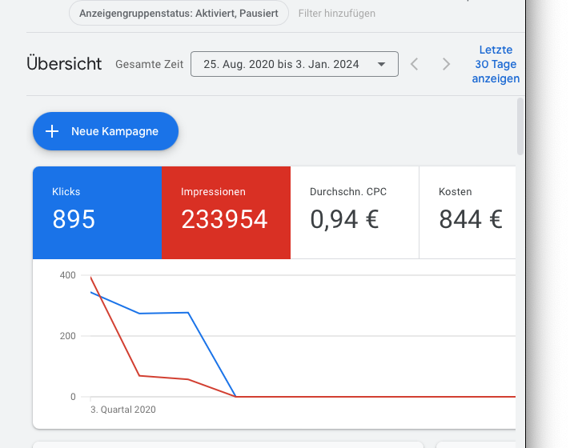
Tagged links
Tag every link, or you can't tell who converts
How-to · analytics · step 1 of 4
Set up the dashboard before the first visitor
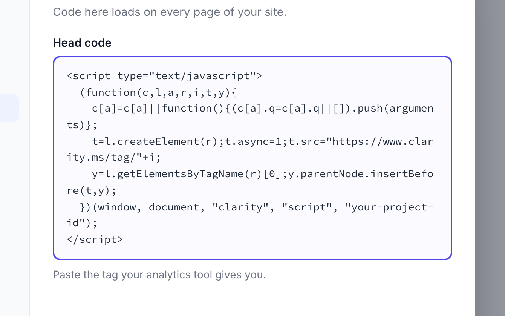
1
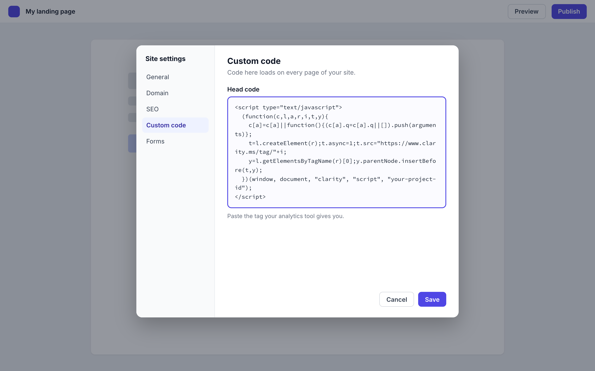
1Add the tag to your page
2Add a consent banner for EU visitors
3Filter by source
4Watch your segment's sessions
In Clarity, Settings, then Setup, then Install manually
How-to · analytics · step 2 of 4
Add a consent banner for EU visitors
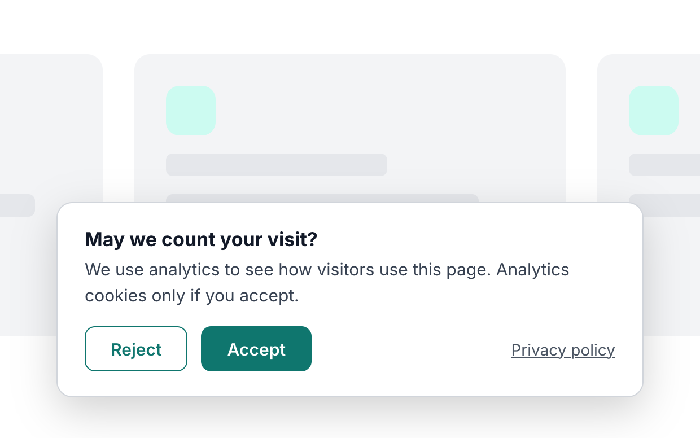
2
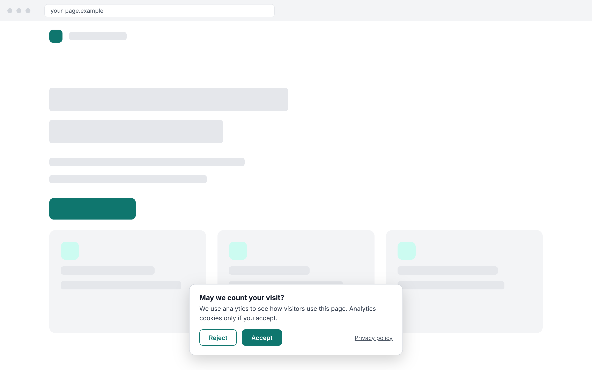
1Add the tag to your page
2Add a consent banner for EU visitors
3Filter by source
4Watch your segment's sessions
EU visitors: banner first.
How-to · analytics · step 3 of 4
Filter by source
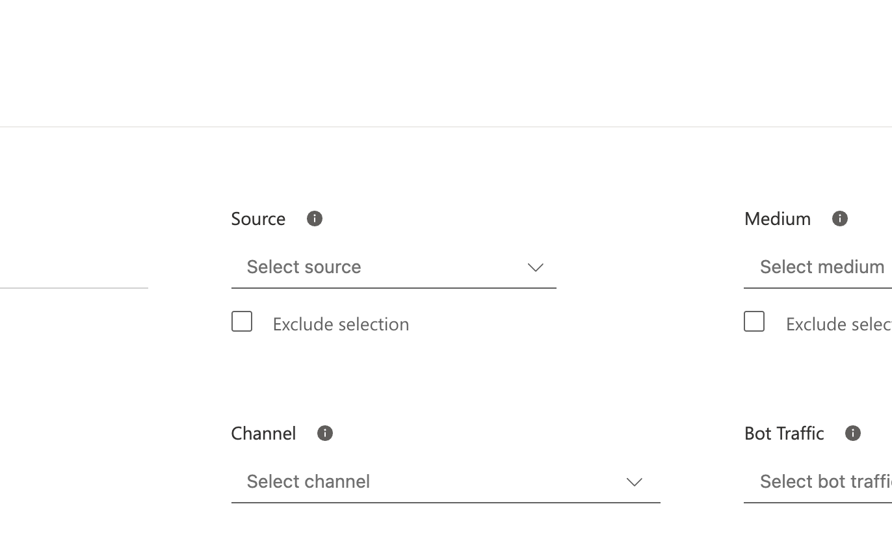
3
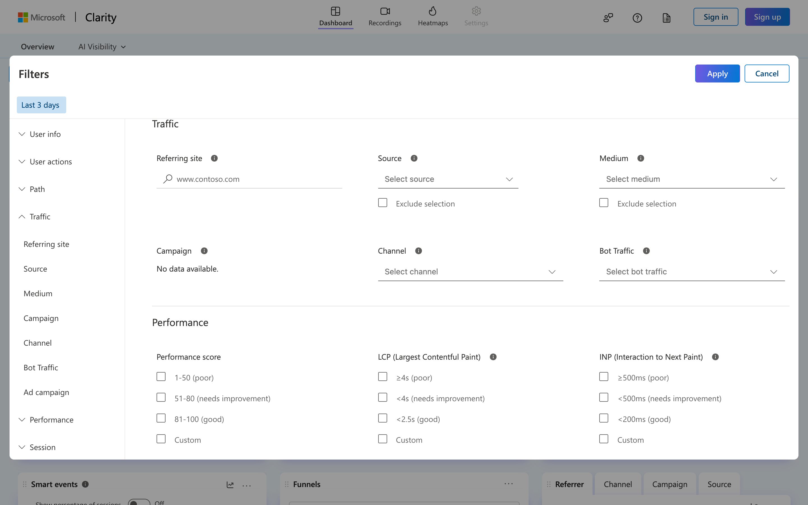
1Add the tag to your page
2Add a consent banner for EU visitors
3Filter by source
4Watch your segment's sessions
Filters, then Traffic, then Source
How-to · analytics · step 4 of 4
Watch your segment's sessions
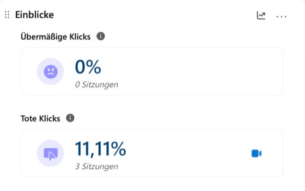
4
1Add the tag to your page
2Add a consent banner for EU visitors
3Filter by source
4Watch your segment's sessions
Tote Klicks are dead clicks, 11% of sessions
Reading your result
Read the curve, then your number
Each curve shows visitors a day, over the weeks after launch
Double down · an example
Double down where your segment converts
11.5% · LinkedIn posts in 2 wind-industry groups
7 of 61
16.7% · Direct outreach, 30 emails
4 of 24
2.3% · €50 search ads
2 of 87
0%10%20%
% of visitors from the source who signed up
12.9%segment only, 11 of 85
33visitors from friends and uni, excluded
Now you · as a team · 3 minutes
Your traffic math
Output
Three named places
Input 4 of 4 · Count it · the answers
Count it: your segment, by source
1
How many visitors do you need?
Work backwards from the sign-ups you need: at least 15 a day each
2
Where do you find them?
Where your segment already is. Name the room, not the channel
3
How do you read the result?
Tag every link, count only your segment, read the curve, then your number
Chapter 7 of 9
Wrap-up and check-out
What you take into the week, and how today went for you.
Recap · step three is a survey or a page, 20+ people
From today you climb from saying to doing
Recap · your page
Their problem, their words, one button
Reflection 1 of 3 · the content
What could you apply?
🛠️
What could you apply?
🤕
What gave you a hard time?
Reflection 2 of 3 · the process
Man vs. machine
🤖
Where did AI actually help you?
🧠
Where was your genius needed?
🕴️
What are your best hacks to share?
Reflection 3 of 3 · the results
Rose, thorn, bud
🌹
What was the breakthrough today?
🌵
What was the hardest part today?
🌱
What is an idea/feature you didn't have time to finish, but want to explore later?
Homework until next time
Publish one landing page per team, log its pass or fail line before the first visitor arrives, and bring 100 visitors per student from your segment to it.
100each
The learning floor is the live page, the logged line and 30 visitors per student from your segment.
Your line is logged before anyone visits.
Homework · how to do it
Seven moves for the week
1
Start with your Problem space (M03) prospects
2
Go where your segment is
3
Tag every link
4
Never move the line, log any copy change
5
Call three sign-ups each
6
Survey your sign-ups, optionally
7
Get a blind second opinion
Homework · what good looks like
A good week ends on your line, not on a feeling
Good
Weak
Line
10%, logged before launch
Written after the first numbers
Traffic
140 tagged visitors from two recruiter groups
400 visitors, mostly friends
Result
9 of 140, under the line, segment switched
"Lots of interest!"
References · 1 of 3
Sources in this deck
Bland, D. J., & Osterwalder, A. (2019). Testing business ideas. Wiley.
Bradburn, N. M., Rips, L. J., & Shevell, S. K. (1987). Answering autobiographical questions. Science, 236(4798), 157-161.
Camuffo, A., Cordova, A., Gambardella, A., & Spina, C. (2020). A scientific approach to entrepreneurial decision making. Management Science, 66(2), 564-586.
Camuffo, A., et al. (2024). A scientific approach to entrepreneurial decision-making: Large-scale replication and extension. Strategic Management Journal, 45(6).
Goldacre, B., et al. (2019). COMPare: A prospective cohort study correcting and monitoring 58 misreported trials. Trials, 20, 118.
Google. (2026). URL builders: Collect campaign data with custom URLs. Analytics Help.
Kaplan, R. M., & Irvin, V. L. (2015). Likelihood of null effects of large NHLBI clinical trials has increased over time. PLoS ONE, 10(8).
References · 2 of 3
Sources in this deck
LocaliQ. (2026). Search advertising benchmarks for every industry.
McCarthy, A. M., Schoorman, F. D., & Cooper, A. C. (1993). Reinvestment decisions by entrepreneurs. Journal of Business Venturing, 8(1), 9-24.
Microsoft. (2026). Consent management. Microsoft Clarity documentation.
Microsoft. (2026). How to set up Clarity manually. Microsoft Clarity documentation.
Murphy, J. J., et al. (2005). A meta-analysis of hypothetical bias in stated preference valuation. Environmental & Resource Economics, 30(3).
NIST/SEMATECH. e-Handbook of statistical methods, 7.2.4.1, confidence intervals.
Prather, M. (2000, December 1). Sole proprietor. Entrepreneur.
Ralston, G. (2017, September 25). YC's essential startup advice. Y Combinator blog.
References · 3 of 3
Sources in this deck
Ries, E. (2011). The lean startup. Crown Business.
Scheel, A. M., Schijen, M. R. M. J., & Lakens, D. (2021). An excess of positive results. Advances in Methods and Practices in Psychological Science, 4(2).
Schmidt, J., & Bijmolt, T. H. A. (2020). Accurately measuring willingness to pay for consumer goods. Journal of the Academy of Marketing Science, 48(3).
Seibel, M. (2023). How to build an MVP. Y Combinator Startup Library.
Swinmurn, N., as told to Eng, D. (2012, September 5). Nick Swinmurn: Zappos' silent founder. Fortune.
Write the test, launch the page, and send your first visitors before you leave.
What evidence would change your mind?
Workshop · step 1 of 3
Write the test, then the copy
1STEP 1 · 30 MIN
WRITE THE TEST, THEN THE COPY
Decide what result would change your mind
We believe [segment] will [action] when we promise [outcome]
Kill line in the Kill Criteria Log, dated, before the page exists
Raw notes into an AI, names removed, five hero sections
Pick the headline closest to what someone said
Output Test card, dated kill line, hero sectionMinutes 30
Workshop · step 2 of 3
Launch in under an hour
2STEP 2 · 35 MIN
LAUNCH IN UNDER AN HOUR
A live page that names their problem, asks for one action
Their words, why it matters, what changes, one button
Form: email plus one segment question
Impressum and privacy line, or it stays offline
Analytics with visitors and sign-ups per source, then publish
Five-second test with another team
Output A public link and analytics that countMinutes 35
Workshop · step 3 of 3
Bring your segment, then commit
3STEP 3 · 25 MIN
BRING YOUR SEGMENT, THEN COMMIT
Leave with visitors on their way
Work backwards: 10 sign-ups at 10% need 100 visitors
Prospects first, then communities, groups, newsletters
One tagged link per student and channel
First messages sent before you leave
Each student picks floor or full bar, midweek pace
Output Tagged links, sent messages, targets, paceMinutes 25
Arrived empty-handed?
Start in the forums where they complain
No interview notes? Copy your segment's exact sentences from the forums where it complains, mark the promise as assumed, and post your link there in Step 3.
Homework until next time
Publish one landing page per team, log its pass or fail line before the first visitor arrives, and bring 100 visitors per student from your segment to it.
100each
The learning floor is the live page, the logged line and 30 visitors per student from your segment.
Your line is logged before anyone visits.
See you next time!
Module 04 · Validating Problems · Case discussion · about 90 minutes
Case discussion: Fairphone
Stand in Fairphone's shoes on 13 May 2013 and decide whether to sell 5,000 phones before making one.
Do you open the pre-sale on this benchmark?
Case · Fairphone, Amsterdam, 2010 to 13 May 2013
Three years of campaign, one month to sell 5,000
Case · Monday 13 May 2013 · vote 1 of 2
Open the pre-sale on this benchmark, or not yet?
Option A
Open the pre-sale on this benchmark
Option B
Not yet
€325the price, paid up front
5,000phones sold
15 June2013, the deadline
Refundif the orders are cancelled
Case · Exhibit 1 · newsletter subscribers, 2013
What do 14,000 sign-ups prove?
Case · diagnosis
Which step does each piece stand on?
Fairphone has a sales benchmark of 5,000 (five thousand) mobile phones, which must be sold before the 15th of June 2013.
Shop terms, article 4.3, adopted 13 May 2013. If Fairphone cancels on a miss, the buyer gets "a full refund of the money the Customer already has paid" (4.4)
Case · board plan
Is 5,000 by 15 June a good test of demand?
Case · vote 2 of 2
Same question. Who moved, and why?
Option A
Open the pre-sale on this benchmark
Option B
Not yet
€325the price, paid up front
5,000phones sold
15 June2013, the deadline
Refundif the orders are cancelled
Case · bridge
Before your page exists, write your line
Fairphone wrote its line into its terms before the first buyer arrived.

![A made-up landing page for in-house recruiters. Headline: Know within a day when a finalist goes silent. One-liner: A daily check for in-house recruiters that flags every finalist who stopped answering, so you call before they sign elsewhere. A form with work email, your role and one button, Book a 15-minute call. A recruiter quote: Our best finalist went quiet for a week. When we noticed, she had signed elsewhere. Three benefits: no finalist lost to silence, no chasing by hand, call the right one first. Impressum and privacy at the bottom. The headline ringed](media/m04-landing-page.png)